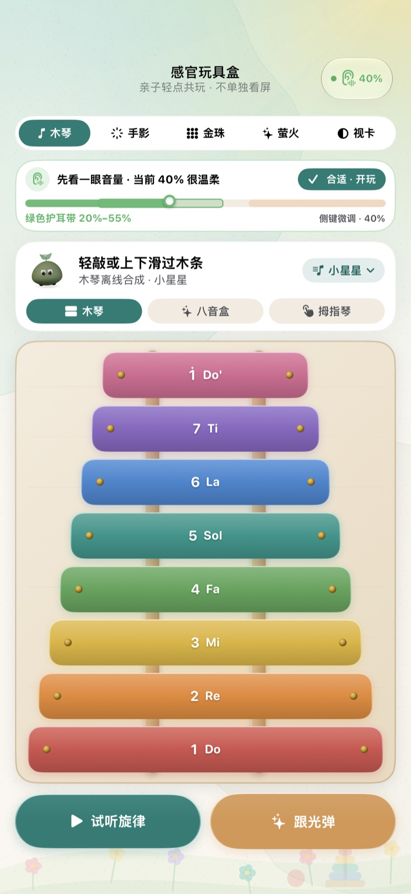
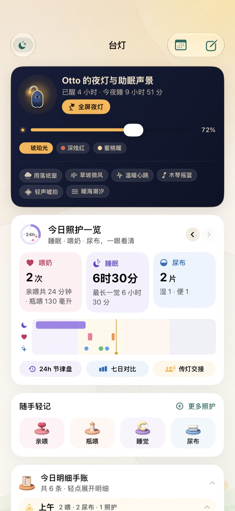
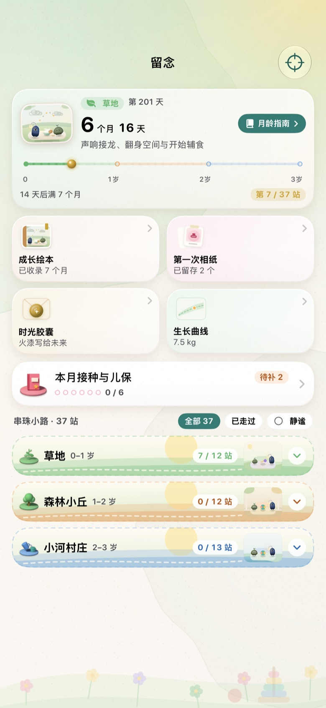
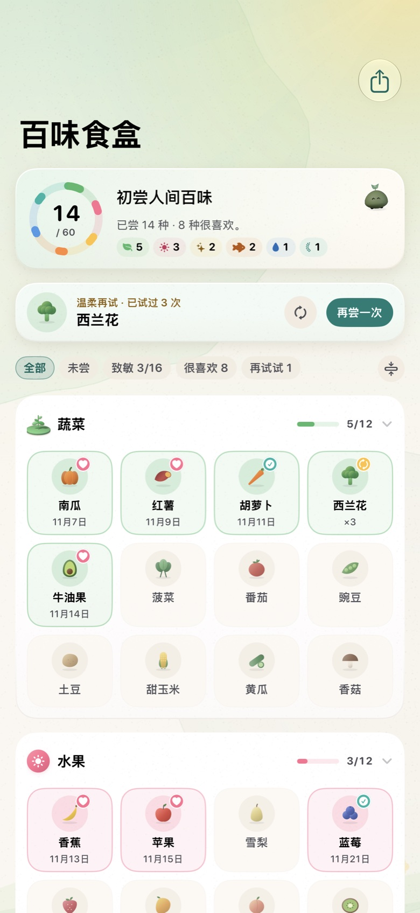

01
摸索
白天陪玩

按宝宝月龄，每天推荐一场用家里东西就能玩的亲子游戏。
- 46 场手边共玩
- 5 种护耳感官玩具
- 60 种辅食与致敏标记
给 0–3 岁宝宝家庭的 iPhone 应用
摸索台灯把每天陪宝宝玩什么、半夜喂奶哄睡、记录成长这三件事，收进四个清楚的板块里。不用注册，不联网，一次买断。


App 底部只有四个入口：白天玩、夜里照护、记录成长、设置与数据。第一次打开就知道去哪儿。
按宝宝月龄，每天推荐一场用家里东西就能玩的亲子游戏。

半夜不刺眼的床头灯和助眠声，单手记下喂奶、睡觉和尿布。

从出生到 3 岁的 37 站成长路线，每月自动排成一本成长绘本。
宝宝档案、主题和语言都在这里；所有数据只存在你的 iPhone 上。
01摸索 · 白天陪玩
每场游戏都写清楚：准备什么、分几步做、宝宝在练什么能力。玩完点一下，月底自动排进成长绘本。
拒绝昂贵教具套盒：用丝巾、勺子、纸杯或双手，陪伴宝宝完成 10 分钟专注探索。
只列出 1–2 件家里常见物品，同时提示当前月龄视线与抓握安全注意。
3–4 句短动作配双画风原创绘本，单指拖动底部金色木珠即可随时回放。
直接讲清视觉追视、双手传递或共同注意原理，并标明 WHO / CDC 指南出处。
陪玩结束点一下完成盖章，可顺手记一句反应，月底自动印进《月度成长纪念册》。

01摸索 · 百味食盒
蔬菜、水果、五谷、蛋鱼肉豆等 6 类食材，标出 8 类常见致敏原。吃过一种点一下，喜欢不喜欢都记得住。

选一张宝宝面前的辅食照片，即刻在 iPhone 本地完成主体抠图做成真实贴纸；无需整库相册权限，照片永不上传。
只记「很喜欢 / 尝过啦 / 下次再试」与皮肤留意标记，鼓励多次温和引入，还能随时导出一整张《百味护照海报》。
02台灯 · 夜里照护
暖色床头灯、可叠加的助眠声、跟着你拍哄节奏的掌心轻振。下面可以直接点一点试试。
21:00–05:59 自动激活 3AM OLED 模式：纯黑减光、放大单手速记垫
02台灯 · 随手记录
照护、发育、留念一共 10 项，全部包含在一次买断里。
单手启停小睡与长觉，入夜自动切入 OLED 无眩光暗夜界面。
自动提示上一侧收尾方向，累计左右哺乳时长不错乱。
母乳或配方奶快捷毫升 / 盎司预设，3 秒记住每次奶量。
区分湿、便与混合状态，睡眠中直接在锁屏实况就能一键记下。
将 7 天与 14 天睡喂规律排成同心圆盘，一眼看懂昼夜并轨。
植物手绘卡标注 8 大致敏族群，支持实拍食物端侧抠图贴纸。
身高、体重与头围离线保存，自动绘制 0–36 月龄百分位参考带。
草地、森林小丘与小河村庄三阶段，填入孕周自动按矫正月龄对齐。
清晰整理免疫与体检节点，随时生成一页看诊摘要备查。
拍立得第一次瞬间、月度成长册与到期才能拆封的未来生日信。
02台灯 · 不开 App 也能记
深度融入 iOS 26 锁屏实况、灵动岛、桌面小组件、控制中心与 Siri 语音捷径——深夜单手抱娃，两秒之内记完继续哄睡。
开启睡眠或亲喂计时后，实况卡片常驻锁屏与灵动岛。深夜保持零眩光黑底，不用中断睡眠计时也能在锁屏顺手点一下「记湿尿布」。
原装打造四枚尺寸完备的桌面小组件；睡前把 iPhone 横扣上无线充进入待机显示（StandBy），琥珀夜灯微光与上次喂睡间隔一眼即知。
内置四枚原生控制中心开关，可添加到锁屏底部按钮或绑定为 iPhone 操作按钮（Action Button），闭眼盲操也零误触。
安装后无需繁琐配对，直接对 Siri 说出以下短语即可完成尿布、瓶喂、辅食记录、开启床头夜灯或询问上次喂奶时间。
03留念 · 成长留念
玩过的游戏、吃过的辅食、拍下的第一次，每月自动排成一本成长绘本。
草地、森林小丘、小河村庄，从出生走到 3 岁；早产宝宝按矫正月龄走。
照片、游戏、辅食和身高体重自动汇成一页，可以分享或打印。
按 WHO 标准画出身高体重曲线，疫苗和体检节点一目了然。
给 1 岁或 3 岁的宝宝写一封信，到了那天才能打开。


04工坊 · 循证与隐私
参考 WHO、美国 CDC 与 AAP、中国国家卫健委等 41 份公开文件，在 App 里随时能点开原文。
和常见的订阅制育儿软件放在一起比一比。
| 核心体验维度 | 摸索台灯 Moss & Otto | 常见订阅制育儿软件 |
|---|---|---|
| 收费与解锁方式 | 一次性买断，46 场共玩、玩具盒、夜灯与留念全功能永久解锁 | 7 天试用后连续包月或按年扣费，停续即锁回忆或历史数据 |
| 账号与遥测追踪 | 免账号零登录，0 KB 后台匿名遥测，原生面容 ID 守护与本地文件备份 | 常需手机或邮箱建号，并在后台采集匿名点击与使用分析 |
| 凌晨 3 点护眼哄睡 | 自动 3AM OLED 暗夜灯 + 3 档暖光 + 60->48 BPM 无声掌心轻拍 + 6 组混音 | 普通深色皮肤配小号按钮，通常只有单段白噪音播放 |
| 伴侣与老人交班 | 划屏传灯 + 零服务器 # 锚点网页信标，安卓与微信点开即看近况 | 要求全家人都下载同一个 App 并绑定云端同步账号 |
| 清醒时刻亲子玩具 | 5 间护耳感官工坊（木琴/手影墙/金珠雨棒/萤火虫/高对比视卡） | 偏重表单统计或纯文字条目，缺乏随手可玩的亲子感官乐器 |
| 初尝辅食与贴纸 | 60 种植物手绘食材 + 8 大致敏筛查 + 端侧 Vision 食物抠图与百味护照 | 系统自带通用 Emoji 图标列表，缺端侧实物抠图 |
| 成长留念与档案产出 | 自动汇编《月度成长纪念册》、拍立得第一次、37 站串珠与火漆时光信 | 多以流水时间轴或基础 CSV / PDF 报表收尾，缺纪念册温度 |
不含广告、没有连续包年诱导，也不会在记录到第 8 天时把基础辅食或睡眠按钮锁成只读逼迫付费。
无需手机号或邮箱注册。宝宝出生日期、相纸照片、照护记录和火漆信只保存在您自己的 iPhone 内，支持面容 ID 上锁与整库导入导出。
生长百分位与阶段观察整理自 WHO、CDC、AAP 与中国国家卫健委公开文件；支持填入孕周自动按矫正月龄温柔陪伴，绝不代替儿科医生。
完全可以。46 场手边活动、护耳感官玩具盒、床头轻拍夜灯与 60 种百味食盒均可免资料即刻体验；需要按月龄匹配生长曲线或写时光胶囊时再随时补充。
在宝宝名片中填好出生孕周后，系统会依照儿科通行的矫正月龄匹配对应月龄站次与活动节奏，不催促赶进度。
因为云端同步需要注册账号并把孩子的睡眠、喂奶和作息规律上传到第三方服务器。借助纯本地的「划屏传灯 + # 锚点网页灯牌」，近 12 小时的奶量与睡眠只编码在网址井号（#）后面，连服务器都看不到任何数据；伴侣或老人无论用 iPhone、安卓还是微信点开链接就能看懂。
「摸索 / 台灯 / 留念 / 工坊」全部四大板块、46 场活动、5 间护耳玩具盒、60 种食盒、全部系统小组件与 Siri 捷径均一次性解锁；后续围绕 0–3 岁场景的优化迭代也绝不改为按年订阅制或插入广告。
感官玩具盒顶部配备实时护耳音量警示条与柔化发声包络，避免突兀高频刺激娇嫩耳膜；夜晚开启床头灯或进入 21:00–05:59 自动 3AM OLED 模式后，界面压低至琥珀与深烛红低眩光光谱，避免白屏刺伤困倦双眼与干扰宝宝褪黑素分泌。
不需要。App 使用苹果系统原生单选照片选择器，仅在你主动挑选哪一张辅食写真时，由系统把那单张图交由本地 Apple Vision 引擎分离前景制作贴纸；应用本身拿不到相册列表，更不连接互联网上传。
应用无云端数据库，除跟随 Apple 换机整机迁移外，还可以在「工坊 › 离线数据与备份」随时导出完整便携档案保存到系统文件 App，在新手机一键导入。
目前已在 12 个国家与地区正式在架：中国大陆、美国、澳大利亚、中国香港、中国台湾、中国澳门、新加坡、日本、加拿大、新西兰、韩国、马来西亚。可直接在下方点击对应地区直达下载。